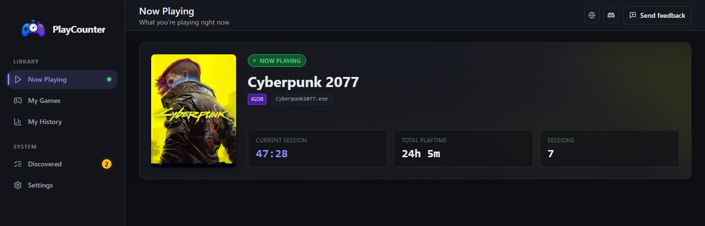
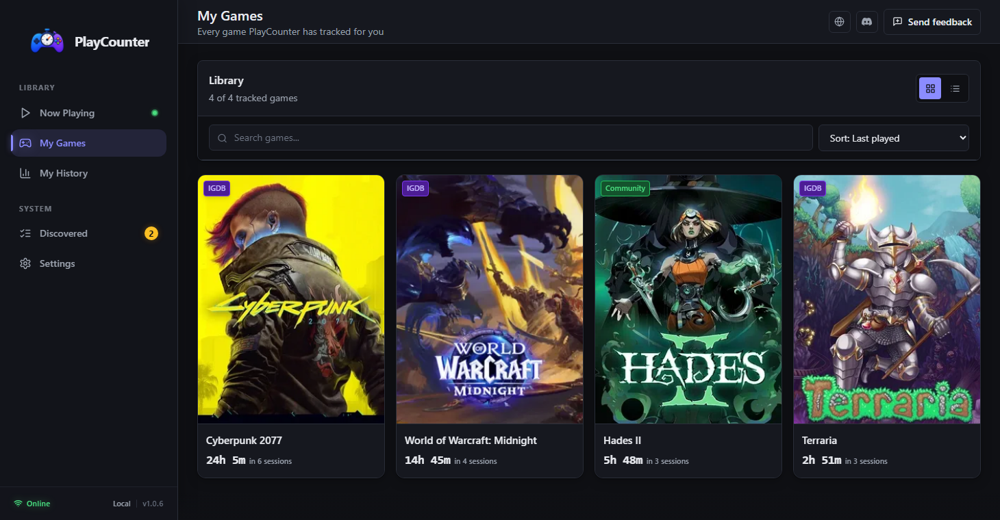

{kind=link}
Start it with Windows
PlayCounter can run from the system tray and monitor active applications without connecting a launcher account.
Free automatic playtime tracker for PC games
PlayCounter is a free game time tracker for Windows. It counts your hours played in the background-across Steam, Epic, Game Pass, GOG, and games that belong to no launcher at all.

Start a game from Steam, Epic, GOG, Game Pass, a desktop shortcut, or its own executable. PlayCounter watches what actually runs and builds your playtime record as you play.
It stays in the system tray, records sessions for recognized games, and keeps the totals ready whenever you want to review them.
PlayCounter can run from the system tray and monitor active applications without connecting a launcher account.
Start it from a launcher, shortcut, portable installation, or executable; timing begins when PlayCounter recognizes the running process.
Check current sessions, total playtime, session counts, and recent activity whenever you want.
When PlayCounter needs your help A new, renamed, generic, or shared executable may require you to identify the game once. PlayCounter keeps any time it has already detected and stores your choice locally.

PlayCounter is free with no paid tier and no account. It is open source under the MIT license, and the installer is published on GitHub with release notes and checksums. See what it does and what it sends.
Yes, for the games it records. PlayCounter times the running Windows process, so recognized games from every launcher land in one list with the same measurement. It does not import the hours those launchers already recorded; its totals grow from the sessions it observes after installation. More in the cross-launcher playtime guide.
PlayCounter can track recognized games from Steam, Epic, GOG, Game Pass, shortcuts, portable installations, and standalone executables. Generic, renamed, or shared executable names may need a one-time choice, while emulators that use one process for every ROM may be tracked as the emulator.
You do not have to launch anything through PlayCounter; start games normally and leave it running in the background to record recognized titles.
You can add its executable locally or submit a match for review. Ambiguous matches are chosen once and remembered locally, while approved community submissions can improve recognition for future players.
Session history and totals stay in local app storage. Automatic matching sends executable filenames without full paths to PlayCounter's API, cover images may load from IGDB, and updates use GitHub. Feedback and community submissions are transmitted only when you choose to send them. Read the full privacy notice.
Every store counts only its own games, and several count nothing at all. These guides explain where each one keeps the number, what it actually measures, and how to get one total across all of them.
Once installed, PlayCounter begins recording recognized games while you continue launching them exactly as you do now.
Free · No account · Installer hosted on GitHub
{kind=link}